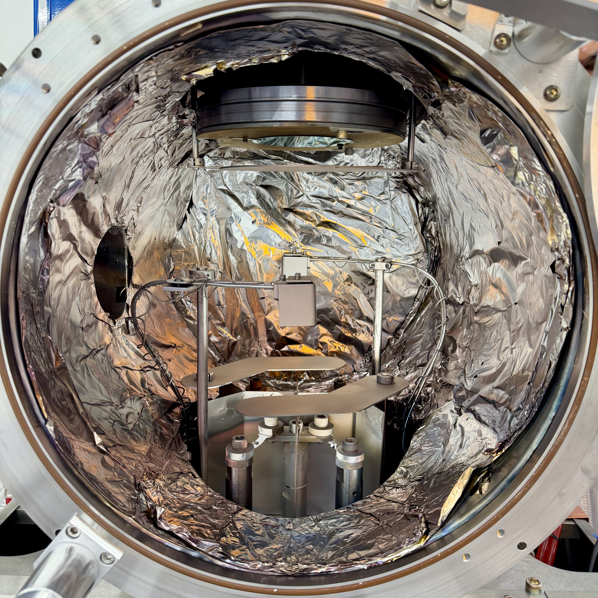
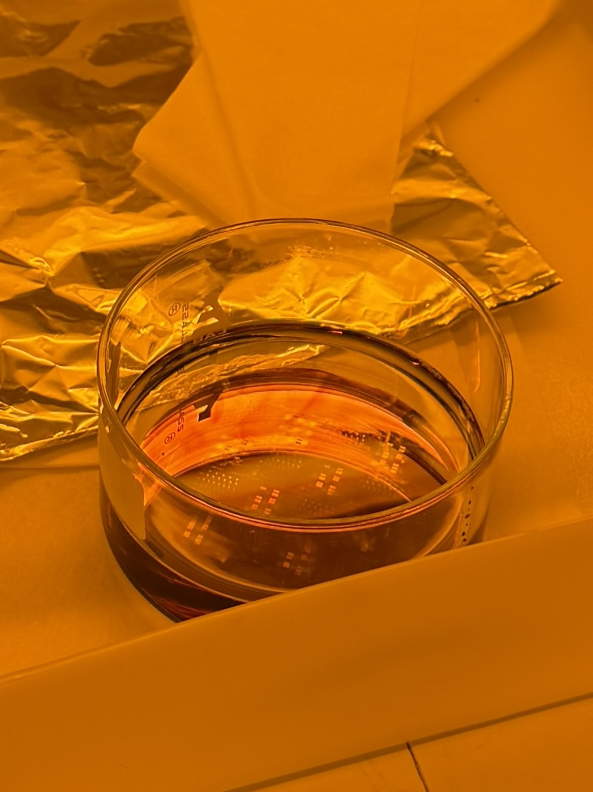
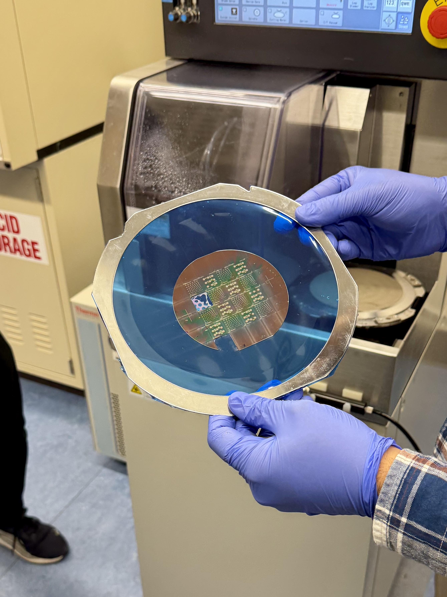

Nanofabrication
For a course during my Masters in Materials Science and Engineering, I had the opportunity to create a chip with two microsensors onboard. The first was a thermal sensor, the second a humidity sensor. The thermal sensor was a thin film RTD that could measure the temperature thanks to known resistivity values of a chromium and aluminum layer deposited on a silicon substrate. The humidity sensor was based on a capacitance sensor that measures the change in capacitance due to the dielectric constant being affected by the humidity in the environment. I've included some fun photos I took during the course. My group and I had the chance to build the device thanks to the wonderful graduate assistants and PhD candidates who operated the machinery and equipment for us. At the end of the semester, I also had the opportunity to design a PN-junction photodiode. This photodiode was designed to detect light in the visible to near infrared spectrum, approximately 400 to 1000 nm. Overall, creating a device that can absorb optical wavelengths of 400 to 1000 nm is not feasible with the PN junction photodiode, however a device can be created that absorbs most of the wavelengths below 900 nm. Included below are highlighted sections and figures from my final report on the device.


